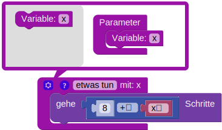
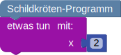

Die Schildkröte soll die vorgezeichnete Blume nachmalen. Die Blüte der Blume ist ein Achteck.
Die Farben deiner Blume müssen nicht mit den Farben der vorgezeichneten Blume übereinstimmen.
Die Schildkröte soll die vorgezeichneten Blumen nachmalen.
Erstelle dazu eine Funktion, die eine einzelne Blume malt.
Nur so kannst du mit der Anzahl der verfügbaren Bausteine auskommen.
Die Farben deiner Blume müssen nicht mit den Farben der vorgezeichneten Blume übereinstimmen.
Die Schildkröte soll die vorgezeichneten Blumen nachmalen.
Bitte schau dir vorab die Erläuterungen der Bausteine unter "weitere Hinweise" an.
Erstelle dazu eine Funktion, die eine einzelne Blume malt. Füge der Funktion über die Einstellungen (Zahnrad-Symbol) einen Parameter hinzu. Der Wert des Parameters soll die Größe der Blume bestimmen. Die größte Blume ist 1,5-mal so groß wie die Blume ganz rechts; die kleinste Blume 0,5-mal so groß.

Wenn du die Funktion verwendest, musst du einen Wert für den Parameter angeben
Beachte dabei, dass du Kommazahlen mit einem Punkt statt Komma schreiben musst:

Die Farben deiner Blume müssen nicht mit den Farben der vorgezeichneten Blume übereinstimmen.